Processing SLiM input files¶
fwdpy has the ability to read in the same input files as Phillip Messer’s SLiM simulation software, which is accomplished by the function fwdpy.fwdpy.readslim().
This function does not read in all of the information in an input file. Instead it reads in the following sections:
- #MUTATION RATE
- #MUTATION TYPES
- #GENOMIC ELEMENT TYPES
- #CHROMOSOME ORGANIZATION
- #RECOMBINATION RATE
These blocks are parsed and converted into data types that may serve as the input parameters for functions like fwdpy.fwdpy.evolve_regions().
Differences between SLiM and fwdpy¶
There are several important differences between SLiM and this package.
Scaling of fitnesses¶
For diploid genotypes 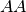, 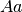, and 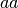, SLiM calculates fitness as  , 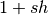, and 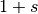, respectively, where
, 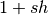, and 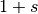, respectively, where  is the selection coefficient and
is the selection coefficient and  the dominance associated with the
the dominance associated with the  allele. In fwdpy, the fitnesses of the three genotypes are , , and 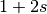, respectively. To account for this difference,
allele. In fwdpy, the fitnesses of the three genotypes are , , and 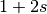, respectively. To account for this difference, fwdpy.fwdpy.readslim() halves the selection coefficient (or the mean for distributions on selection coefficients) and doubles the dominance found in the #MUTATION TYPES block of a SLiM input file.
IMPORTANT: SLiM input files should be generated according to that software’s manual!!! In other words, co-dominance should be coded as  and you should allow
and you should allow fwdpy.fwdpy.readslim() to convert it to one automatically! Further, the fitnesses of the three genotypes should be treated as , , and , respectively. The intent here is to allow pre-existing SLiM input files to be used in fwdpy with no additional modification.
Discrete vs continuous positions¶
SLiM‘s mutation model involves discrete positions along the genome. Therefore, the output from that software contains mutations with postitions whose values are integers. Likewise, recombination events occur between integer-valued positions in SLiM.
Internally, this package uses fwdpp to model mutation and recombination positions as continuous random variables along genomic intervals in a fashion similar to the coalescent simulation ms. (Techincally, ms treats mutation as continuous and recombination breakpoints as discrete, but let’s ignore that point for now.)
An additional difference is that SLiM is paramterized in terms of “per base pair” mutation and recombination rates and this package uses “per region” rates.
fwdpy.fwdpy.evolve_regions() adjusts the SLiM input file to account for these differences. Let’s consider the following setup for recombination rates:
#RECOMBINATION RATE10000 1e-720000 2e-730000 3e-7
The block above means that genomic positions 1 through 10,000 have a recombination rate of 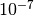 per base pair (bp). Positions 10,001 through 20,000 have a recombination rate of 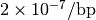, and positions 20,001 through 30,000 have a recombination rate of 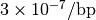. The total/cumulative recombination rate is 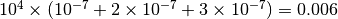
The function fwdpy.fwdpy.readslim() will convert the above block to three half-open, continuous intervals:
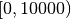, with total recombination rate 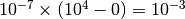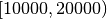 with total recombination rate 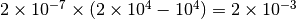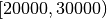 with total recombination rate 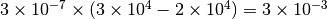
You can see that the total recombination rate is the same (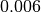). The difference from SLiM is that crossover positions will be drawn from continuous uniform distributions.
The intervals where mutations occur are treated similarly. Further, for a given genomic element, the mutation rate to a particular mutation type is the mutation rate specified in the #MUTATION RATE block times the weight assigned to that mutation type divided by the sum of all weights for all mutation types occuring in that genomic element.
A word of caution¶
SLiM allows different mutations to have the same position label. This software does not. This difference may be relevant when comparing simulation output to theoretical predictions, which typically come from the infinitely-many sites assumption that this package models. For a region of length  , as 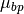 (the mutation rate per base pair) the output of SLiM and fwdpy should be comparable for large and 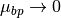. When mutation rates are large relative to , SLiM‘s mutation scheme becomes a quasi-finite-sites model.
, as 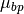 (the mutation rate per base pair) the output of SLiM and fwdpy should be comparable for large and 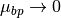. When mutation rates are large relative to , SLiM‘s mutation scheme becomes a quasi-finite-sites model.
Limitations¶
- Gene conversion is not currently supported